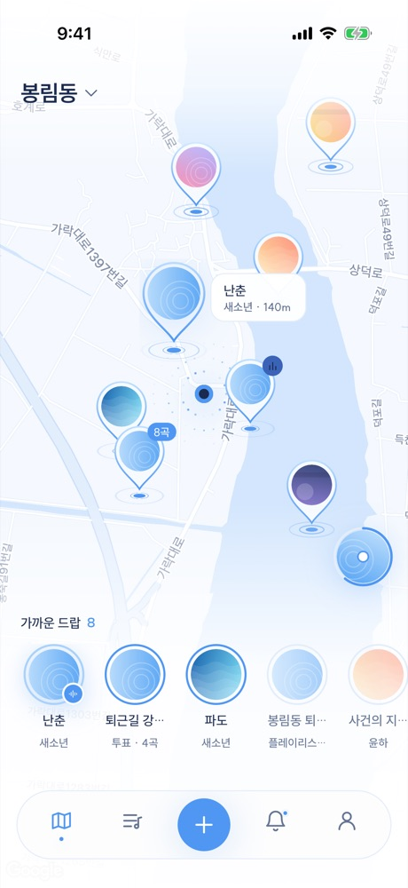
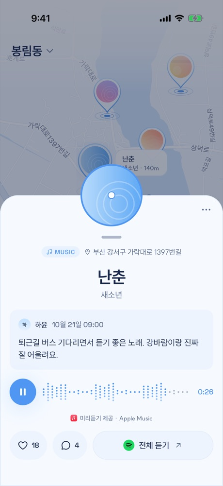
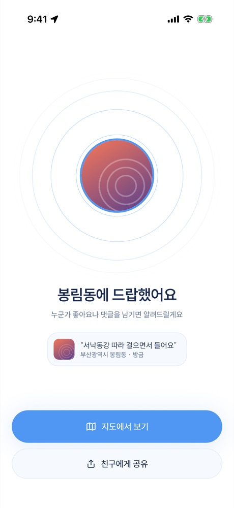
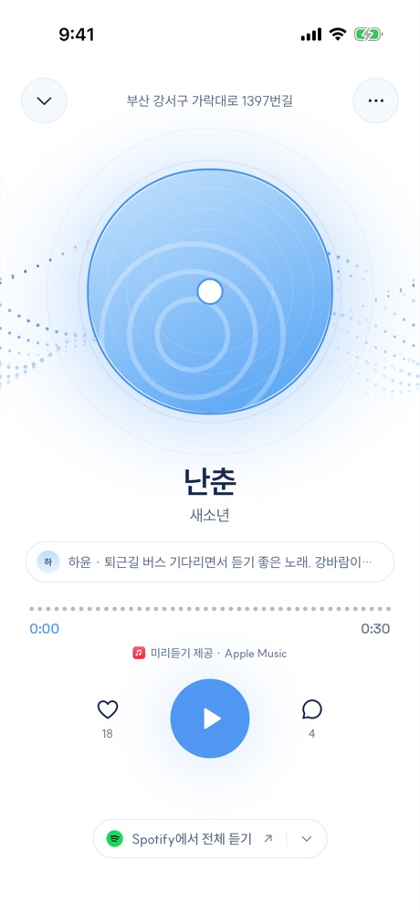
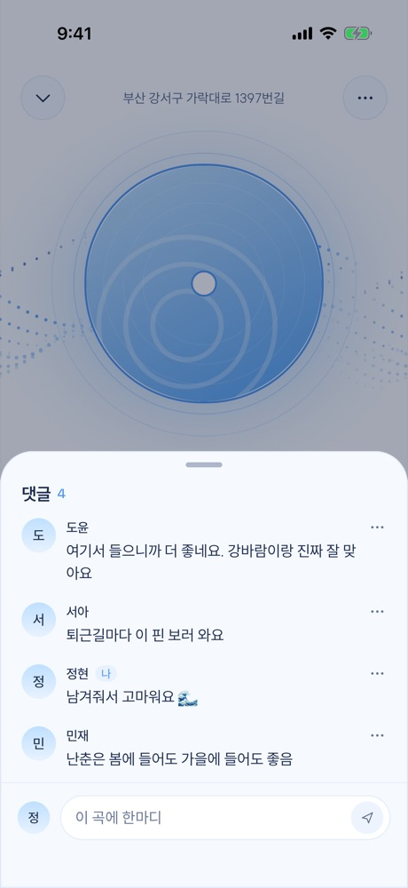

걷다가 만나는
누군가의 노래
지금 서 있는 곳에 좋아하는 음악을 남기고, 이 길에 남겨진 음악을 지도에서 찾아 들어요.
App Store 출시 준비 중Google Play 출시 준비 중

지도를 열면
노래가 보여요
내 주변 1km 안에 사람들이 남긴 곡이 핀으로 떠올라요. 누르면 어떤 곡인지, 어떤 말과 함께 남겼는지 볼 수 있어요.


지금 선 자리에
한 곡을 남겨요
미리 들어보고
마음에 들면 끝까지
30초 미리듣기로 바로 들어보고, 전체 곡은 평소 쓰는 음악 앱에서 이어 들어요.


남긴 노래에
누군가 답해요
지나가던 사람이 좋아요를 누르고 한마디를 남기면 알림으로 알려 드려요. 같은 길을 걷는 사람과 노래로 이야기해요.
곧 스토어에서
만날 수 있어요
조금만 기다려 주세요. App Store와 Google Play에 곧 올라가요.
App Store 출시 준비 중Google Play 출시 준비 중